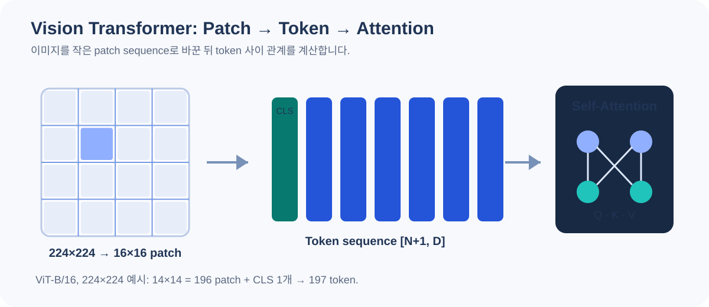

03 · TRANSFORMER & VIT
Transformer Vision: Attention에서 ViT까지
패치·토큰·Q/K/V·self-attention을 먼저 이해하고, Vision Transformer 논문을 대표 사례로 연결합니다.
대표 논문 ViT · Transformer를 이미지 분류에 적용한 문제 설정
Transformer를 이미지 분류의 주된 구조로 사용할 수 있을까요? ViT는 이미지를 일정한 크기의 패치 (Image patch, 이미지를 일정 크기로 잘라 만든 작은 조각)로 나누고, 각 패치를 토큰 (Transformer가 한 단위로 처리하는 벡터) 벡터로 바꿔 Transformer encoder에 넣습니다. 논문의 핵심은 이미지의 2차원 격자를 토큰 시퀀스로 변환하는 방법과 대규모 사전학습의 효과입니다.
원 논문은 대규모 데이터로 사전학습했을 때의 강력한 결과를 보였습니다. 이것을 “작은 데이터에서도 ViT가 항상 CNN보다 좋다”로 일반화하면 안 됩니다. 사전학습 데이터, 입력 해상도, 증강, 학습 설정과 계산 예산을 함께 비교해야 합니다.

Patch → Flatten → Linear projection
패치 크기를 16 × 16으로 정하면 224/16 = 14이므로 총 14 × 14 = 196개 패치가 생깁니다. 각 RGB 패치를 펼치면 16 × 16 × 3 = 768개의 숫자입니다. 이 벡터에 학습 가능한 선형 변환을 적용해 임베딩 (원래 데이터를 모델이 계산하기 좋은 벡터 표현으로 바꾼 값) 차원 D로 바꿉니다.

ViT-B/16에서는 패치 벡터 길이와 D가 우연히 모두 768입니다. 따라서 변환이 불필요한 것이 아닙니다. 학습 가능한 768 × 768 행렬은 픽셀 공간을 모델이 쓸 특징 공간으로 바꿉니다. 패치 크기와 D는 서로 독립적으로 설계할 수 있습니다.
패치 크기와 토큰 수
INTERACTIVED=768로 고정한 크기 계산입니다. 선택값마다 사전학습 모델을 실행하는 데모는 아닙니다.

CLS와 위치 임베딩은 왜 더할까?
CLS 토큰은 이미지 전체를 분류하는 데 사용할 학습 가능한 추가 토큰입니다. 입력 단계에서는 이미지의 내용을 이미 알고 있는 벡터가 아닙니다. 여러 encoder 층에서 패치들과 정보를 주고받은 뒤 최종 표현을 분류 head에 전달합니다.
Position embedding은 패치 위치에 대한 학습 가능한 정보를 더합니다. 기본 self-attention (같은 입력 안의 token들이 서로 어떤 정보를 참고할지 계산하는 연산)만으로는 토큰의 원래 격자 위치를 직접 구분하지 못하기 때문입니다. 원 ViT는 1차원 학습 가능한 위치 임베딩을 사용합니다.
2차원 패치를 일정한 순서로 펼쳐도 원래 행·열 배치는 정해져 있습니다. 위치 임베딩은 그 순서에 대응하는 정보를 제공합니다. 입력 해상도를 바꿔 토큰 수가 달라지면 사전학습 위치 임베딩을 보간하는 등의 처리가 필요할 수 있습니다.

Q · K · V: 무엇을 비교하고 무엇을 가져올까?
한 토큰의 특징 벡터에서 서로 다른 선형 변환으로 Query, Key, Value를 만듭니다. Q는 비교를 요청하는 표현, K는 비교 대상의 표현, V는 실제로 섞어 가져올 정보라고 생각할 수 있습니다. 이것은 이해를 위한 비유이며 세 값 모두 학습된 수치 벡터입니다.
| 단계 | 한 head의 shape 예시 | 해석 |
|---|---|---|
| 입력 X | [B, 197, 768] | 정규화된 토큰 특징 |
| Q, K, V | 각각 [B, 197, 64] | 12 heads, D=768이면 head당 64차원 |
| QKᵀ | [B, 197, 197] | 각 query와 모든 key 사이 점수 |
| Softmax | 각 행의 합 = 1 | query 하나가 다른 토큰을 섞는 가중치 |
| 가중합 AV | [B, 197, 64] | Value를 관계에 따라 혼합 |
계산 감각을 잡기 위해 한 query의 스케일링된 점수가 [2, 1, 0]이라고 가정하면 softmax는 약 [0.665, 0.245, 0.090]입니다. Value가 1차원 [10, 20, 30]이면 결과는 약 14.25입니다. 실제 모델에서는 수십 차원의 벡터를 head마다 같은 방식으로 섞습니다.
Multi-head는 여러 표현 공간에서 관계를 계산한 뒤 결과를 이어 붙이고 출력 projection을 적용합니다. 각 head가 반드시 “색상 담당”, “모양 담당”으로 고정되는 것은 아닙니다. Attention map 역시 모델 판단의 완전한 인과 설명이라고 볼 수 없습니다.


Encoder 블록 내부의 두 번의 업데이트
원 ViT의 encoder는 LayerNorm을 먼저 적용하는 구조입니다. Attention은 토큰 사이 정보를 교환하고, MLP는 각 토큰의 채널 특징을 변환합니다. 각 단계에는 입력을 더하는 residual connection이 있습니다.
ViT-B는 12개 encoder 블록, 임베딩 768차원, 12개 attention head, MLP (Multi-Layer Perceptron, 여러 완전연결층으로 구성된 신경망 블록) 내부 3072차원을 사용합니다. MLP의 GELU와 dropout 같은 세부 연산은 위 도식에서 생략했습니다. 최종 LayerNorm 이후 CLS 표현이 분류 head로 전달됩니다.
CNN과 비교할 때 살펴볼 점
| 관점 | CNN | 기본 ViT |
|---|---|---|
| 공간 처리 | 지역 커널을 반복 적용 | 패치 토큰 사이 전역 attention |
| 구조적 가정 | 지역성·가중치 공유가 강하게 내장 | 상대적으로 적은 이미지 특화 가정 |
| 입력 해상도 | 활성값·연산량 증가 | 토큰 수 증가와 attention 비용 고려 |
| 작은 물체 | stride와 feature 해상도에 민감 | 패치 크기와 입력 해상도에 민감 |
224에서 448로 가로·세로를 두 배로 늘리고 P=16을 유지하면 패치는 196에서 784로 4배가 됩니다. CLS 포함 score 행렬의 원소 수는 197²=38,809에서 785²=616,225로 약 15.88배입니다. 이것은 attention score의 크기 비교이며 전체 실행시간이나 총 GPU 메모리가 반드시 같은 비율로 늘어난다는 뜻은 아닙니다.
이미지를 패치 임베딩 시퀀스로 만들면 Transformer로 분류할 수 있습니다. 좋은 성능을 만드는 조건에는 구조뿐 아니라 데이터 규모와 사전학습이 포함됩니다.
출처와 더 확인할 자료
본문은 이해를 위한 한국어 해설입니다. 도식은 직접 재구성했으며, 가상 수치와 단순화한 구조는 해당 위치에 표시했습니다.
- Dosovitskiy et al. · An Image is Worth 16×16 Words ↗ICLR 2021. 패치 임베딩·CLS·encoder 구조와 모델 크기 표의 원문입니다.
- Google Research · vision_transformer ↗저자 측 공식 구현과 모델 설정입니다.
- Vaswani et al. · Attention Is All You Need ↗Scaled dot-product attention과 multi-head attention의 기반 논문입니다.